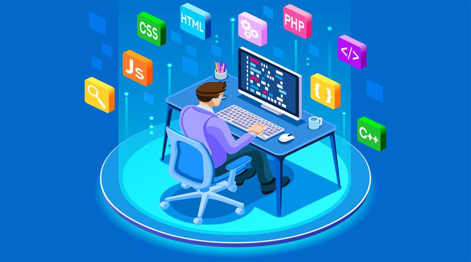
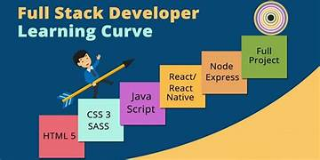

Portfolio
A full-stack developer is a developer or engineer who can build both the front end and the back end of a website. The front end (the parts of a website a user sees and interacts with) and the back end (the behind-the-scenes data storage and processing) require different skill sets.


